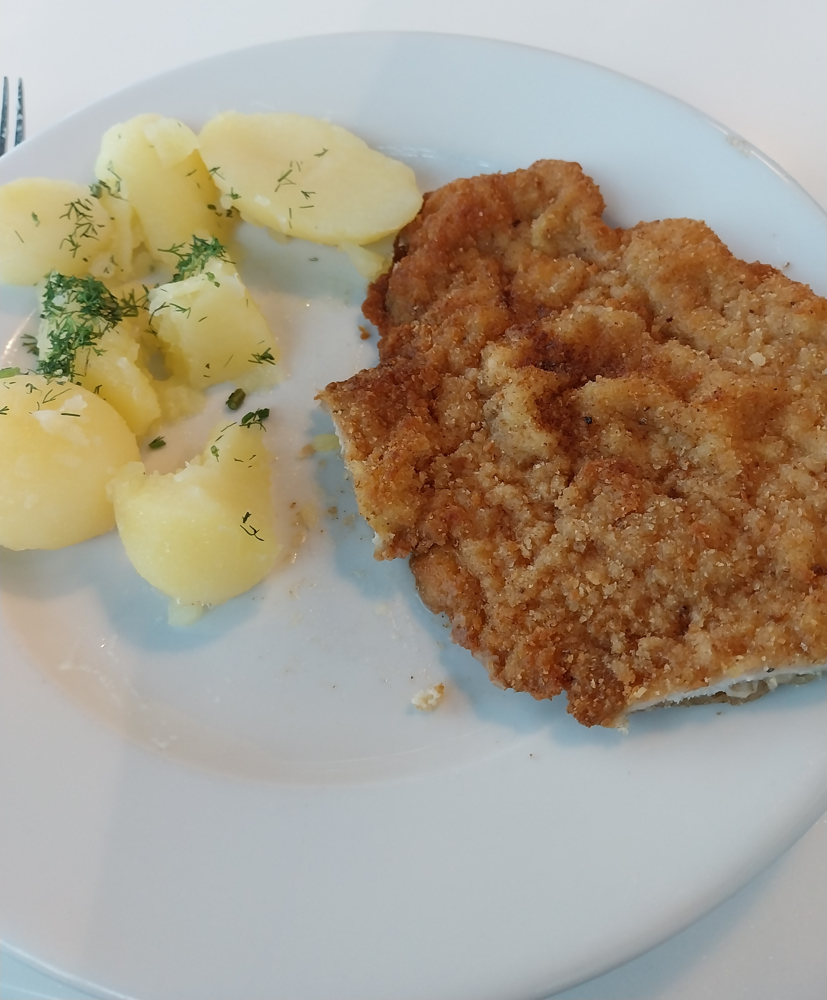

Le trajet
Mon voyage en Ukraine commence à 4h30 du matin, après trois pauvres heures de sommeil. La premiere étape est relativement simple, je dois rejoindre la porte Maillot, à l'autre bout de Paris, pour monter dans la navette de 5h40 qui mène à l'aéroport de Paris-Beauvais. Cette navette mettant deux heures à arriver à destination, l'aéroport de Beauvais mérite encore moins son préfixe que l'université Paris-Saclay, mais les vols y sont bon marché, parfois même moins chers que la navette.
J'arrive un peu en avance Porte Maillot, ce qui me fait arriver vers 7h du matin à l'aéroport. Le bâtiment parait très temporaire, le plafond est en tole. J'ai vu des aires d'autoroute mieux accrochées au sol. Un nombre important d'ukrainiens sont présents avec moi, ils prennent pour la plupart le même avion pour Cracovie. J’achète le canard enchaîné du jour, ce que je fais souvent. Je ne sais pas encore que cette fois je vais le lire en entier, ce qui est bien plus rare.
En attendant l'avion je lis la moitié de la première page du canard, avant de le ranger et de ne plus y penser, et de retourner utiliser mon téléphone. Je monte dans l'avion, et deux heures plus tard, je suis à Cracovie.
À Cracovie, j'ai deux heures pour manger et trouver mon bus. Dans magasin de souvenirs j'achète des biscuits pour plus tard, et je trouve une espece de cantine ou pour 9 euro je mange des pommes de terre et un schnitzel.
Schnitzel et patates
{kind=link}
Je me rend ensuite au point d'information de l'entreprise de Bus que je vais utiliser. Un grand type sympathique qui ressemble à Monsieur Indestructible m'indique ou prendre le bus et me donne sa couleur et sa plaque dans un anglais moyen. Je lui demande si il est le chauffeur, ce qui est était probablement une bourde car il me répond : "No, I'm the boss, big boss".
À ce moment la, je n'ai plus que 30% de batterie sur mon téléphone, je vais donc trouver une prise et j'attend 30 minutes l'arrivée du bus, ce qui me remonte à 70%.
Une fois dans le bus, il est possible de se charger, mais seulement si on a un cable USB pour son téléphone. J'ai juste le chargeur de mon Thinkpad, qui n'a pas de cable amovible et ne s'utilise qu'avec une prise.
Le bus part à 13h40, et on arrive à la frontière à 19h, et j'ai 20% de batterie. La charge de mon téléphone m’inquiète, car c'est mon seul divertissement avec le canard enchaîné, et parce que une fois arrivé à la gare de Lviv, je dois faire 11km pour arriver à mon hotel, ce que je compte faire en commandant un Uber.
Passer la frontière prend habituellement du temps, mais on passe avant les voitures dans une file réservée aux bus, ce qui est encourageant. Mais en passant une barrière munie d'un feu rouge, le chauffeur rentre dans le feu et le casse. Je ne sais pas encore ce que cet événement implique, mais l'attente se fait très longue, on se fait doubler par d'autres bus. Je finis par oser discuter avec mes voisins, et je comprends qu'une amende doit être payée pour le feu rouge, et que la procédure prend beaucoup de temps.
On passe le poste polonais à 22h30, et je n'ai vraiment plus beaucoup de batterie. Le poste Ukrainien est brumeux, il y a des maitres-chien et des soldats cagoulés et armés. J'ai fini le canard pendant ces 3h d’arrêt, mais je regarde quand meme mon telephone de temps en temps ce qui mange progressivement ma batterie qui descend à 4%. La mort prochaine de mon téléphone me cause vraiment beaucoup de stress, j'apprends l'adresse de l'hotel par coeur et demande un cable autour de moi sans grand succès. J'apprend en discutant qu'on ne peut pas utiliser Uber la nuit, que seule l'application "Uklon" permet de commander des taxis après le couvre-feu. On me dit aussi qu'il est possible de prendre un taxi pour sans le commander, mais je n'ai pas de liquide ukrainien, juste 60 euros. Lorsque l'on descend du bus pour présenter nos passeports, je remarque une vraie prise au niveau de la porte du bus, j'y laisse mon téléphone et je suis sauvé.
 Poste frontière ukrainien
Poste frontière ukrainien
On finit par passer la frontière ukrainienne à 23h, minuit en Ukraine (j'utiliserai dans la suite les heures ukrainiennes). Je récupère mon téléphone au bout d'une heure, j'ai 40% de batterie, je suis sauvé. J'installe Uklon, mais leur système de validation par SMS ne fonctionne pas, je suppose à cause de mon numéro français.
Le bus arrive à la gare de Lviv à 1h30. L'ambiance est assez étrange. Je suis sur un grand parking, il y a beaucoup de voiture qui passent, mais les deux seuls taxis sont arrêtés, et disent non aux personnes qui les approchent.
Je vais changer des sous dans une cabine sur le parking. Je reveille le pauvre employé, et récupère 1600 hryvnia en échange de 40€. Immédiatement, deux enfants de 8 ans s'approchent moi, je suppose pour mendier, mais n'insistent pas beaucoup quand ils voient que je ne comprends rien.
Je me dirige vers un des taxis, et essaye de lui dire ou je veux aller. Il fait visiblement un effort pour comprendre, mais n'y arrive pas. Il me réclame le nom de mon hotel, et n'est pas satisfait par la réponse, car c'est "Lviv City Inn" et il veut un nom en ukrainien. Il me demande ensuite de rester, en mentionnant un "collègue". Pendant que j'attends, un soldat, ou du moins quelqu'un en uniforme, sans arme, mais l'air hirsute, s'approche de moi et me parle ukrainien. Le chauffeur de taxi le fait fuir. Je téléphone aussi à Antonina, ma compagne deja a l'hotel, pour voir si elle ne peut pas me commander un taxi. Les minutes passent ou le chauffeur de taxi revient me parler ukrainien régulièrement, et insiste pour que je reste.
Un deuxième soldat vient me parler, je lui dit que je suis français, et demande si il parle anglais. Il me dit que non, et qu'il s'appelle Romane. Je lui serre sa main énorme, et il me dit "piou piou". Je lui fait signe que je ne suis pas piou-piou, et il m'indique qu'il parle de lui. Je lui dit merci en ukrainien, il semble très content.
À ce moment, le chauffeur de taxi me fait signe de venir, ce que je fais, et son collègue arrive enfin. Lui conduit une voiture qui n'est pas un taxi. Je donne l'adresse de l'hotel et il me réclame 1500 hryvnia, ce qui fait 34€, mais qui est un prix énorme pour l'Ukraine. Je comprends qu'il vaut mieux ne pas rester d'autant plus qu'un café est ouvert, mais il est très difficile de se faire comprendre. Il se montre très insistant, et me propose même 1200 hryvnia (30€) pendant que je pars, mais je m'en vais quand même.
J'arrive dans le café avec ma grosse valise. C'est un grand bâtiment, il y a une sorte de petit bar avec une vitrine, et une plus grande pièce à coté avec des tables et pas mal de monde qui attend. Je me dirige vers le bar ou je demande un thé aux 3 jeunes employés. Il y a un grand type un peu sale qui se met à me parler ukrainien pendant que j'essaye de choisir mon thé, ce qui fait beaucoup rire les employés. Une fois mon thé choisi, je lui assène un "do you speak english", ce à quoi il répond oui, avant de beaucoup se concentrer pour me dire "ya ... Marioupol", ce qui signifie "je suis Marioupol" en ukrainien, mais ne veut rien dire dans le contexte. Je comprend qu'il veut dire qu'il vient de Marioupol, et qu'il est donc réfugié, et qu'il veut donc sûrement de l'argent, mais il n'arrive pas à me le demander.
J'ai à ce moment ma meilleure idée de la soirée, et demande à un des employés si il peut me commander un taxi. Il parle super bien anglais, je lui donne l'adresse et il le fait. Il me montre l'endroit ou le taxi va m'attendre, et que je devrais payer 400 hryvnia (10€).
Après cela, Marioupol fini par me montrer un croissant à travers la vitrine en me disant "adine" ("un" en russe). J'accepte pour qu'il me lâche la grappe, et puis ca coûte un truc comme 1 euro. Et la, ce champion n'arrive plus à se decider sur ce qu'il veut. Il commence à montrer plusieurs choses dans la vitrine, je lui "nyet, adine", et il me répond "adine, adine, adine" en montrant plusieurs choses dans la vitrine. J'arrive à lui dire en russe que ce n'est pas un mais 3. Hilarité des employés. Il finit par se décider sur une boite de confiserie (???), mais le taxi est arrivé, et les employés n'arrivent plus à faire marcher le TPE. Après beaucoup d'hésitation stressante car le taxi m'attend, je finis par payer en liquide (45 hryvnia donc vraiment pas grand chose), et courir vers le taxi avec mon thé brûlant dans une main et ma valise de soute dans l'autre. Il est 2h30 du matin, et j'ai enfin mon taxi, qui arrive à l'hotel en 20 minutes.
Contrairement à ce qu'on pourrait imaginer, je n'ai ni faim, ni sommeil, sûrement à cause du stress.